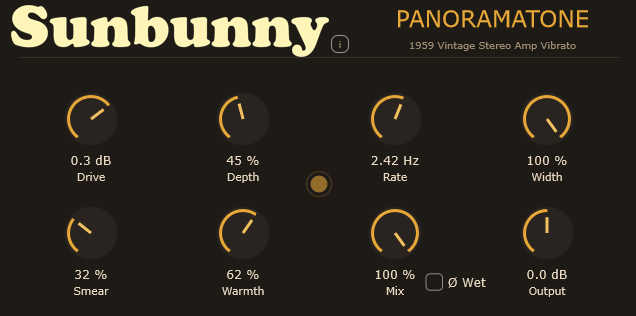
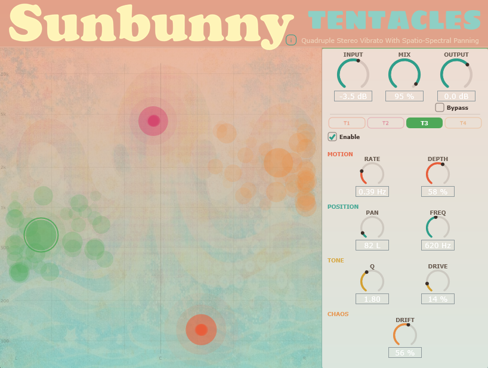
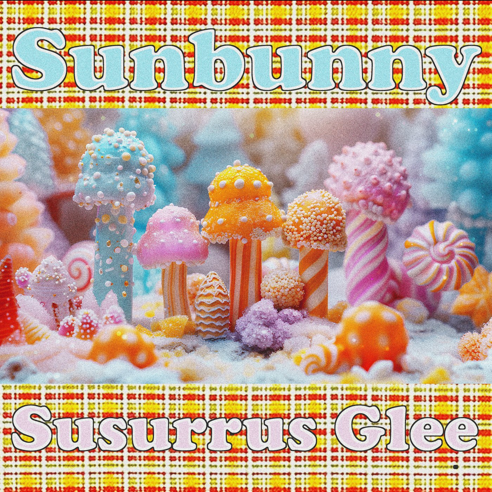
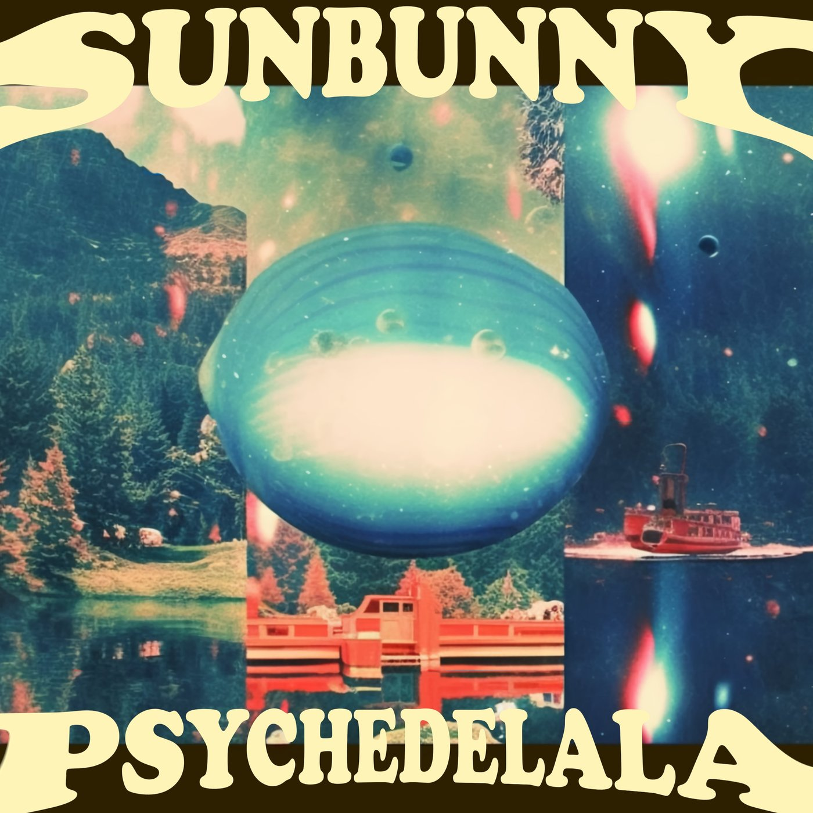
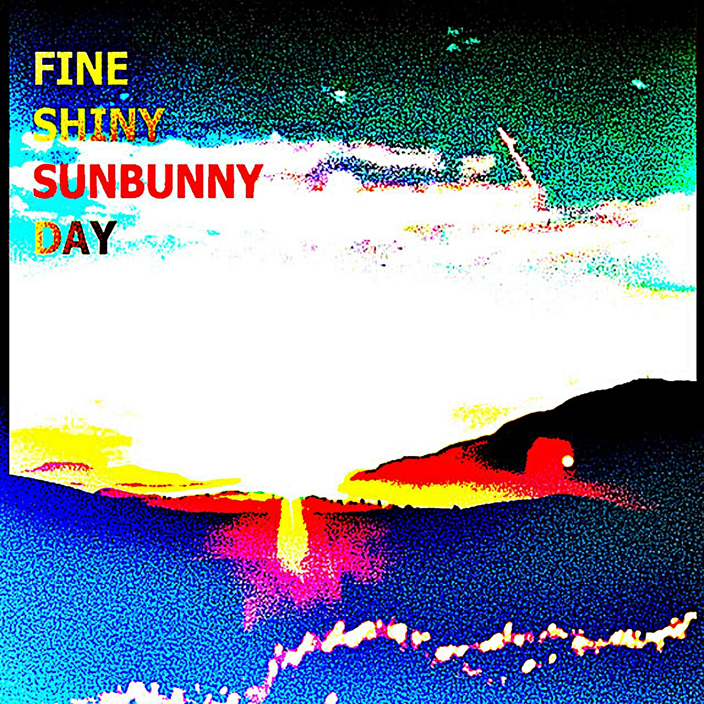

Uncommon Sounds & Curious Instruments
Sunbunny
A little more strange.
Musical creations by A.I. Expert and Indie Jazz Rock musician Phillip Adkins.
Sunbunny is about exploring quirky sounds and vibes via advanced harmony and shoegazey chains of vintagey tones with hipster bleep bloop pedals, often jammed into pop-structured guitar-centric instrumental tracks. Please feel free to reach out for collabs on music, tech or anything at all.

Sunbunny Sounds, in Two Forms
Featured sounds
Made to be played with
Tools for the happy accidents.
Explore octave layers, drifting vibrato, stereo movement and unapologetic clipping. Each Sunbunny plugin starts with a sound worth chasing.
The collection
Find your next rabbit hole.

Sunbunny Absolutely Smashing
RMS and LUFS-maxxing extreme clipper — designed to get you to +3 LUFS and higher.
Sunbunny Oh See Threee
Analog-style octave divider turns any input into a layered, glitchy analog choir.

Sunbunny Panoramatone
Analog-style pitch vibrato that adds lush vintage shimmer and organic movement to any sound.

Sunbunny Tentacles
Quadruple stereo vibrato with spatio-spectral panning — place four modulation layers in 2D audio space.
The other side of Sunbunny
Guitars + Pedals → Albums
Jazz-influenced instrumental music, vintage vibes and shoegazey textures. Listen to the records and read the stories behind them.
Poolrooms
I challenged myself to start an album with visual imagery as the inspiration. I generated images of vibey pool rooms and then improvised to try to conjure the vibes I was feeling. Bottled the juju and here we are with 2 mixtape-inspired tracks meant to just steamily steep yourself inside in the background of your wet, hazy, bath-tiled, dreamy day.

Susurrus Glee
Me trying my best to make something that sounded more like “songs” and not a meandering landscape of intensely evolving improvisation. Catchy and somewhat dancey bits about, probably my most “colorful” and memorable tunes are in here. Quirky and beat-centric, built around the most weird-yet-usable guitar sounds I could conjure at the time. All guitar, bass, drums, (maybe some light vocals) and way too many effects pedals.

Psychedelala
This was all about capturing guitar sounds. At the time I was really into the Chase Bliss Habit and Blooper and these dominate the album. I’m always trying to use these bleep-bloop machines in a song-ish context, so this is my early effort to take all my bedroom sound experimentations and get them into a more listenable format. Some of these definitely take you on a trip, hence the name.

Fine Shiny Sunbunny Day
This album was the first one after a long spell of not finishing anything. I decided to ditch my previous vocal centered concept and just play the guitar. Long, winding epic jams meant to be listenable and repeatable. I put together the most insane chain of stereo effects I possibly could and limited myself to exactly 1 track each of guitar, bass, and drums to see how big of a sound I could make with just a trio concept.
Most of it was recorded during a months-long struggle with insomnia; I’d often wake up at 3AM unable to get back to sleep so… I’d zombie into my recording room and get lost in pedals and improv for hours. I still really like this album—I think it captured that period of my playing well.